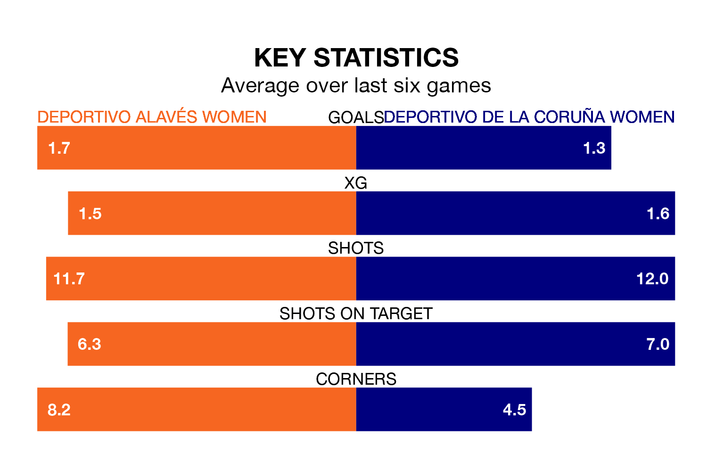

Deportivo de La Coruña Women are strong favourites to take all three points despite Deportivo Alavés Women's home advantage in Saturday lunchtime's match.
*Betting Company* are offering odds of 2.0 on Deportivo de La Coruña sealing the win, with the visitors sitting first in the Primera Federación Femenina table.
Deportivo Alavés, who are seventh in the league and 15 points behind Deportivo de La Coruña, are priced at 3.1 to win. A draw is set at 3.4.
With 29 goals in 18 games so far this season, Deportivo de La Coruña are the league's joint-third-highest scorers with 1.6 goals per game. And they are conceding fewer than average, letting in 11 goals at a rate of 0.6 per game.
Deportivo Alavés are also above average scorers, with 1.3 goals per game, compared to a league average of 1.2. They have conceded 1.1 goals per game.
The hosts are in good form in the Primera Federación Femenina, with four wins and a draw from their last six games.
With three wins and three draws over that period, the away side's form is slightly worse – they have taken 12 points from 18, compared to Deportivo Alavés's 13.
Deportivo Alavés's last match was on Saturday, a 2-1 win against Albacete Women.
Deportivo de La Coruña beat Logroño Women 2-0 last time out, also on February 10.
Updated: 13:04 (UTC), 16/02/24